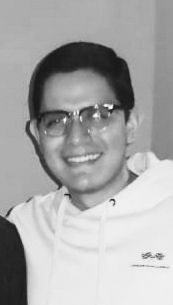

Curriculum Vitae

I. Datos Personales
Nombre: José Carlos
Apellido: Rojas Herrera
Fecha de Nacimiento: 28 de noviembre
Lugar de Nacimiento: Comayagüela, M.D.C., Francisco Morazán
Número de Identidad: 0801-1996-20829
Estado Civil: Soltero
Dirección: Lomas del Guijarro Sur, Avenida Berlín, Casa # 1215
Celular: 8881-4431
Correo Electrónico: jose99rojas@hotmail.com
II. Formación Académica
Actualmente estudio Ingeniería en Sistemas Computacionales en la Universidad Tecnológica Centroamericana
2014 - 2015 Bachiller en Ciencias y Letras en la Macris School
2015 - 2015 High School en la Macris School
2003 - 2014 Primaria y Secundaria en la Macris School
2001 - 2002 Pre-escolar en la Academia Los Pinares
III. Cursos y Seminarios
14 de agosto de 2015 "Taller de Inducción a la Vida Universitaria" por la Universidad Tecnológica Centroamericana (4 h.)
10 de noviembre de 2014 "Seminario Trabajo en Equipo y Cultura de Excelencia" por Valor Humano (6 h.)
IV. Idiomas
Español Nativo
Inglés Comprende: 100%
Escribe: 100%
Habla: 100%
V. Informática
- Microsoft Office: Word, PowerPoint, Excel
- Prezi
VI. Experiencia Laboral
Intérprete Médico en la empresa Grupo Levanter (11 meses)
VII. Otros Datos de Interés
Disponibilidad de 11 a.m. a 2:30 p.m. por motivos académicos